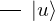
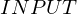
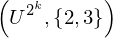
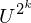
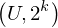
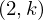

Expression of type ExprTuple¶
from the theory of proveit.physics.quantum.QPE¶
In [1]:
import proveit
# Automation is not needed when building an expression:
proveit.defaults.automation = False # This will speed things up.
proveit.defaults.inline_pngs = False # Makes files smaller.
%load_expr # Load the stored expression as 'stored_expr'
# import Expression classes needed to build the expression
from proveit import ExprTuple
from proveit.logic import Set
from proveit.numbers import three, two
from proveit.physics.quantum import Input, Ket, Output, SPACE
from proveit.physics.quantum.QPE import U_pow_two_pow_k, u_
from proveit.physics.quantum.circuit import IdentityOp, MultiQubitGate
In [2]:
# build up the expression from sub-expressions
sub_expr1 = Ket(u_)
expr = ExprTuple(Input(sub_expr1), IdentityOp(), MultiQubitGate(U_pow_two_pow_k, Set(two, three)), Output(sub_expr1), SPACE, SPACE)
Out[2]:
In [3]:
# check that the built expression is the same as the stored expression
assert expr == stored_expr
assert expr._style_id == stored_expr._style_id
print("Passed sanity check: expr matches stored_expr")
In [4]:
# Show the LaTeX representation of the expression for convenience if you need it.
print(expr.latex())
In [5]:
expr.style_options()
Out[5]:
In [6]:
# display the expression information
expr.expr_info()
Out[6]:
| core type | sub-expressions | expression | |
|---|---|---|---|
| 0 | ExprTuple | 1, 2, 3, 4, 5, 5 | |
| 1 | Operation | operator: 6 operand: 13 |  |
| 2 | Literal | ||
| 3 | Operation | operator: 7 operands: 8 |  |
| 4 | Operation | operator: 9 operand: 13 |  |
| 5 | Literal | ||
| 6 | Literal |  | |
| 7 | Literal |  | |
| 8 | ExprTuple | 11, 12 |  |
| 9 | Literal |  | |
| 10 | ExprTuple | 13 |  |
| 11 | Operation | operator: 23 operands: 14 |  |
| 12 | Operation | operator: 15 operands: 16 |  |
| 13 | Operation | operator: 17 operand: 22 |  |
| 14 | ExprTuple | 19, 20 |  |
| 15 | Literal |  | |
| 16 | ExprTuple | 25, 21 |  |
| 17 | Literal |  | |
| 18 | ExprTuple | 22 |  |
| 19 | Literal |  | |
| 20 | Operation | operator: 23 operands: 24 |  |
| 21 | Literal |  | |
| 22 | Literal |  | |
| 23 | Literal |  | |
| 24 | ExprTuple | 25, 26 |  |
| 25 | Literal |  | |
| 26 | Variable |  |